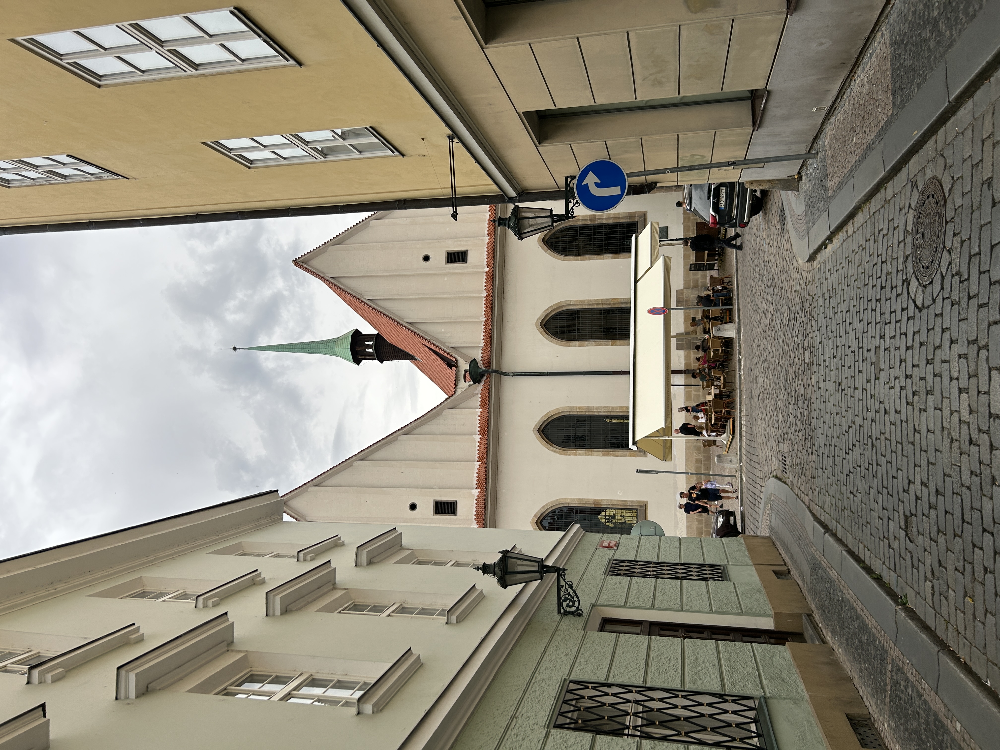
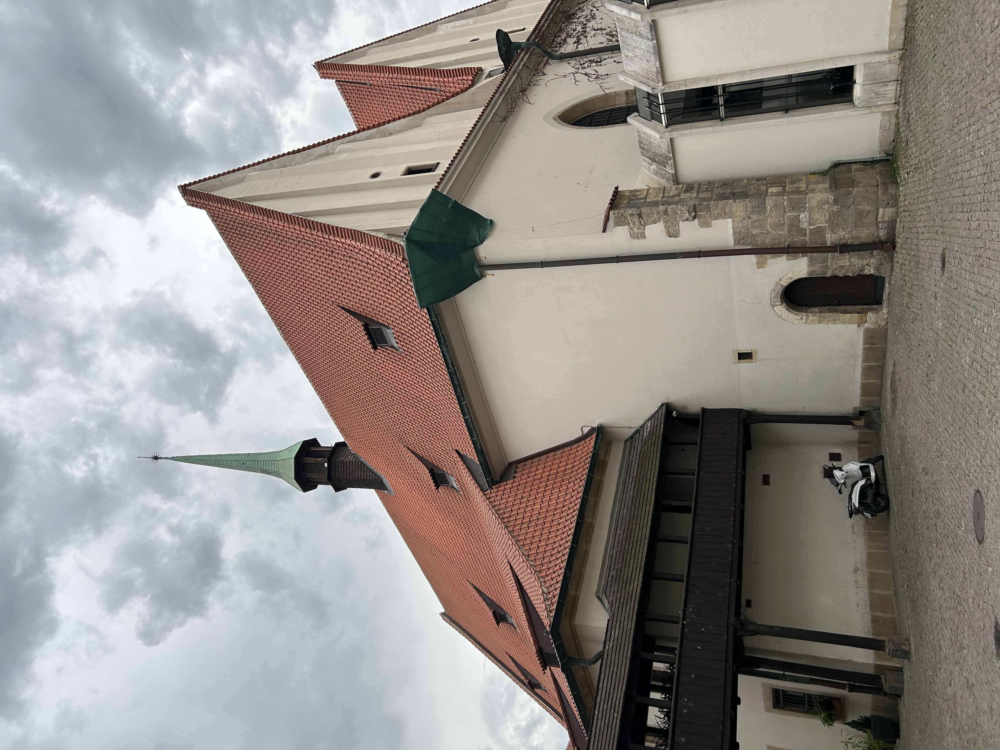
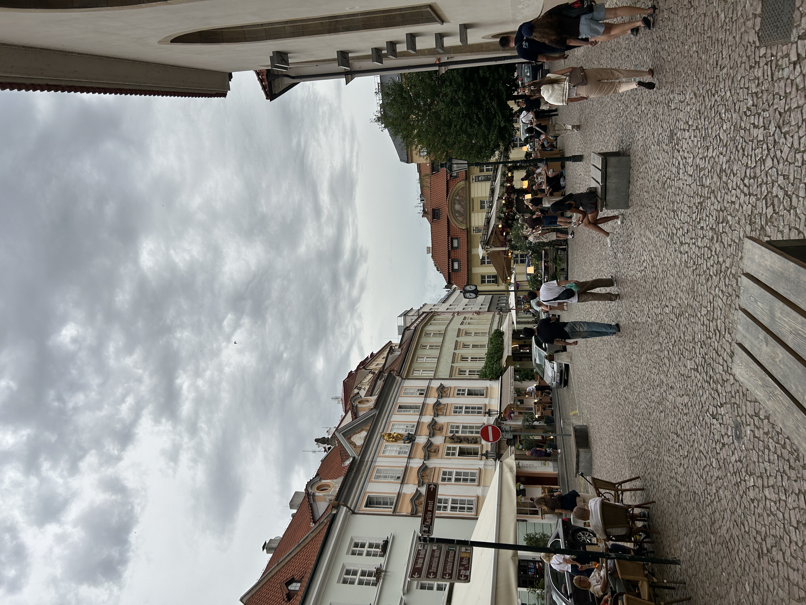

The Bethleham Chapel is a small, rather inconspicuous building tucked away in the Old Town of Prague. But don't let its casual appearance fool you! The building is one of the most significant locations in all of Czech history.
The building was founded as a Catholic church in 1391. Catholic priest Jan Hus was appointed as the preacher and administrator of the chapel on March 14, 1402, and famously taught in the Czech language, rather than Latin. During his studies at the University of Prague, he was introduced to the writings of English reformer John Wycliffe and was heavily influenced by them. The Czech peasantry at the time resented the Catholic clergy, who owned half of all land in Bohemia. Hus soon emerged as a major religious voice for the Czech people, opposing what he perceived as greed and corruption among Church leader, including the sale of indulgences and the purchase of church offices. He advocated for a return to communal equality among laymen and clergy. In opposition to Catholic doctrine, Hus maintained that the Bible was the ultimate authority, not church leaders, and wanted both clergy and layman to participate in drinking wine during mass (historically only clergy drank wine).
For his heretical beliefs, Jan Hus was excommunicated by the Archbishop in 1410, but he continued preaching at the Bethlehem Chapel. His followers, Hussites, rallied around him. In 1414, Hus was invited by King Sigismund of Hungary to explain his views before a church council and was promised safe passage to and from the meeting. Hus agreed, but, contrary to the promise, he was subsequently arrested and burned at the stake.
Despite the death of Jan Hus, the Hussite religion continued to spread. Holy Roman Emperor Sigismund received permission from the pope to launch a crusade against the Hussites. The Hussite Wars began, lasting for nearly 15 years and killing around 10% of the Bohemian population. For about two centuries after the Hussite Wars ended, the majority - up to 90% at times - of the Czech lands were Hussites until forced re-Catholicization under Emperor Ferdinand II. As a result of centuries of strained relations with Catholicism and the later influence of communist anti-religious propaganda, the Czech Republic is currently one of the least religious countries in Europe, with only 11.7% identifying as Christian, and only 2% attending church weekly.

